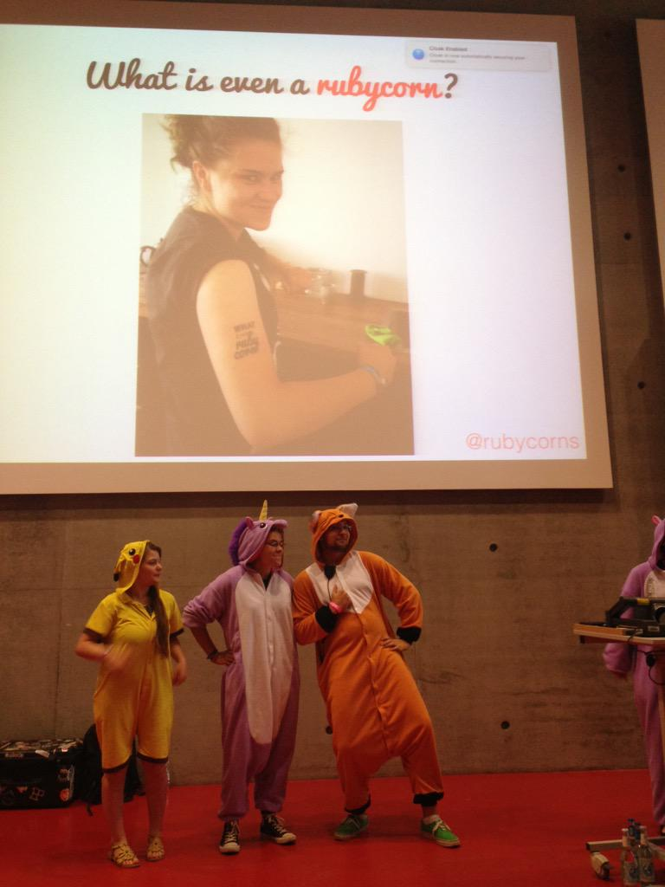

  	<div class="flex-wrap">
      
  	  <article class="tweet  " id="main">
  	    <p class="full_text">
  	      What even is a rubycorn? #rubycornsrule #eurucamp <div class="gallery"><ul><li><a href="../../tweets_media/627790335817744384-CLZb-qeWcAAjD6N.jpg"></a></li></ul></div>
  	    </p>
  	    <p class="created_at">
  	      8/2/2015, 3:37:34 AM
  	    </p>
  	    <p class="favorite_count">Favs: 10</p>
  	    <p class="retweet_count">Retweets: 5</p>
  	    <a class="permalink" href="../627790335817744384">link</a>
  	  </article>

  	</div>
  </div>
